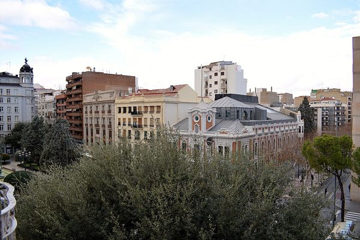

Servidor WEB-ALBACETE (192.168.100.11)

Albacete es una ciudad de Castilla-La Mancha y la capital de la provincia del mismo nombre. Tiene unos 175.000 habitantes y es conocida por su feria de septiembre, por sus navajas y por estar en plena llanura manchega. En la foto se ve la Plaza del Altozano, en el centro de la ciudad.
Foto: Enrique Íñiguez Rodríguez (Qoan), Wikimedia Commons, licencia CC BY-SA 4.0.
Página de prueba para la práctica de redes de Sistemas Informáticos (1º DAM).